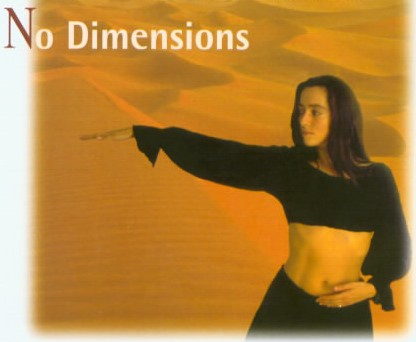

无维度冥想
无维度冥想是一种以中心为导向的舞蹈，也是旋转冥想的准备阶段。它起源于古尔吉耶夫的动作练习，持续一小时，分为三个阶段。第一阶段是配合呼吸的动作，第二阶段是旋转，第三阶段是闭眼躺下以便能量整合。
练习此冥想： 下载音频并在以下步骤中跟随音频进行练习。

1. 第一阶段：30分钟
六个动作组成的舞蹈，持续重复30分钟。双手放在腹部，按照以下步骤进行：
- 1. 从鼻子吸气，将双手移至心脏处。呼气时，右手臂和右脚向前移动，同时左手回到腹部。然后恢复到原来的姿势。
- 2. 重复动作，左手臂和左脚向前移动，右手回到腹部。恢复到原来的姿势。
- 3. 吸气，右手臂和右脚向右侧90度转动。
- 4. 重复此动作，左手臂和左脚向左侧90度转动。
- 5. 吸气，右手臂和右脚向后180度转动。
- 6. 重复此动作，左手臂和左脚向后180度转动。
始终从你的中心（丹田）开始动作，并使用音乐保持正确的节奏。舞蹈应持续流动，并随着时间的推移而增加强度。如果你的身体自然倒下，也没关系。
2. 第二阶段：旋转（15分钟）
逆时针旋转，保持眼睛微微睁开，双臂伸展。让旋转带动你，呼吸正常。如果有必要，可以调整方向并慢慢减速结束旋转。

3. 第三阶段：静默（15分钟）
闭上眼睛，最好趴着躺下。让见证发生，简单地观察你体内的能量流动。